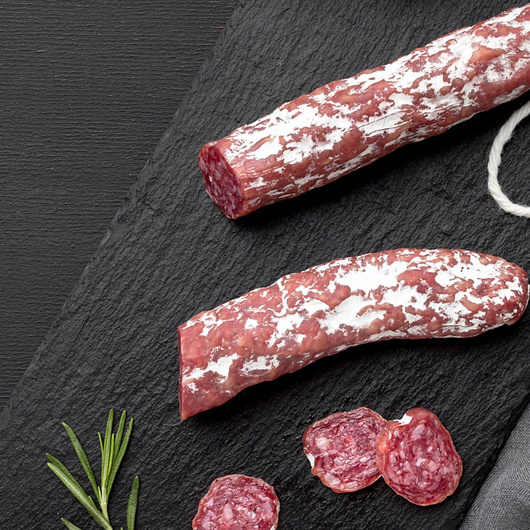
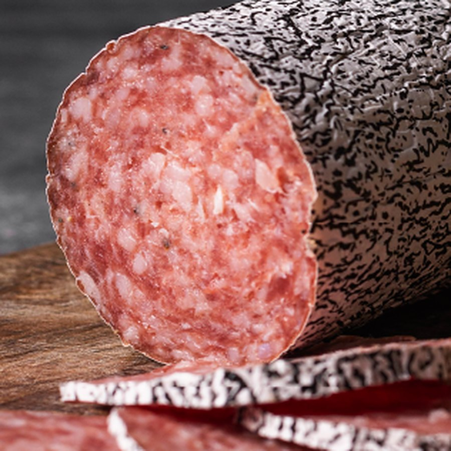

Tripa fibrosa Fibrø® para salames, bondiolas, jamones y mortadelas
Celulosa regenerada con refuerzo de papel de fibra larga: resiste el embutido, mantiene el calibre en toda la tirada y deja pasar el humo y el vapor. Plisada en tubos en nuestra planta de La Plata, con tratamiento E.I. (embutido inmediato): se embute directo de la caja, sin remojo.

- Ø45 a Ø195calibres
- E.I.embutido inmediato, sin remojo
- Tubos plisadoslistos para la embutidora
- La Platacorrugado en nuestra planta
Así queda
Piezas terminadas con nuestros insumos




Qué es la tripa fibrosa Fibrø®
Es una tripa artificial de celulosa regenerada reforzada con papel de fibra larga. El papel le da resistencia mecánica y un calibre uniforme; la celulosa la hace permeable al humo y al vapor, por eso sirve tanto para productos cocidos como curados y secos.
Según el tratamiento interior, la tripa adhiere al producto (para piezas que se venden con tripa, como el salame) o se pela fácil (para piezas que se desenvuelven antes de la venta o el feteado).
Calibres y usos
Del salame recto a la mortadela, cada producto tiene su calibre. Si tu pieza no está en la tabla, consultanos y la armamos a medida.
| Producto | Calibre (mm) |
|---|---|
| Salame recto y longaniza | Ø45, 50, 55 y 58 |
| Salame Milán | Ø80, 95 y 107 |
| Bresaola y lomo cocido | Ø107 |
| Bondiola, panceta y lomo curado | Ø107 a Ø165 |
| Jamón y mortadela | Ø165 a Ø195 |
Embutido inmediato (E.I.): sin remojo
El tratamiento E.I. se aplica al plisar la tripa en tubos. El tubo sale listo para usar: se retira de la caja y entra directo a la embutidora, sin baldes de remojo ni tiempos de espera en la línea.
Si por tu proceso preferís remojar, alcanza con sumergir el tubo en agua tibia y retirarlo de inmediato.
Plisada en nuestra planta
Metros de tripa plisados en un tubo, compatibles con equipos de embutido y clipeado automáticos: menos manipulación por pieza y menos paradas. A pedido, impregnada con aromas y sabores.
La tripa fibrosa se cotiza por metro. Si ya comprás tripa fibrosa de otro origen, también la plisamos y le damos el tratamiento E.I. con nuestro servicio de corrugado.
Preguntas frecuentes
¿La tripa fibrosa Fibrø® necesita remojo antes de embutir?
No. Con el tratamiento E.I. (embutido inmediato) el tubo plisado se usa directo de la caja. Si preferís remojar, sumergilo en agua tibia y retiralo enseguida.
¿Qué calibre uso para bondiola?
Entre Ø107 y Ø165 según el tamaño de la pieza. Para jamón y mortadela, de Ø165 a Ø195; para salame recto, de Ø45 a Ø58.
¿Es compatible con clipeadoras automáticas?
Sí. Los tubos plisados están pensados para equipos de embutido y clipeado automáticos y también para embutido manual.
¿Cómo se cotiza?
Por metro de tripa. Decinos calibre, volumen mensual y tipo de producto y te pasamos la cotización.